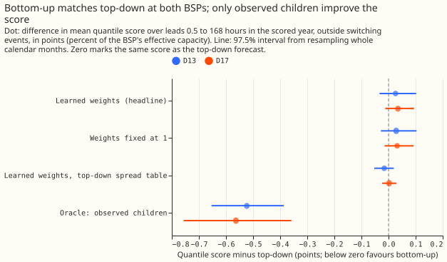
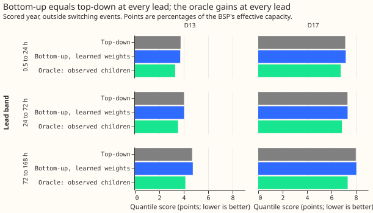
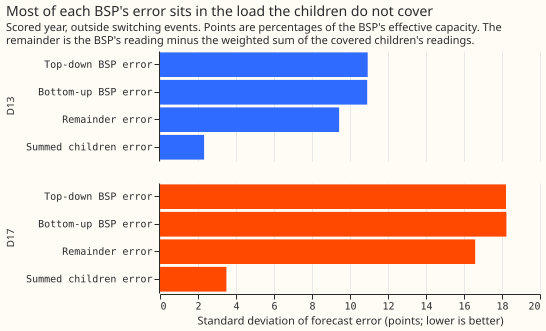

Experiment 161: a bulk supply point is forecast no better from its children than on its own
Take-home: building a bulk supply point (BSP) forecast from its children's forecasts did not beat forecasting the BSP as a stand-alone series, at either BSP. In the scored year, the bottom-up arm scored 4.387 points at D13 against 4.361 for top-down (C1, bottom-up minus top-down: +0.026, 97.5% interval -0.033 to +0.102), and 7.706 at D17 against 7.672 (+0.035, -0.012 to +0.094). The bottom-up arm is 0.6% and 0.5% worse, within the noise.
The likely reason is the share of the BSP that the sum can reach. Only three children per BSP
report real power and have a long history, so they cover 42% (D13) and 56% (D17) of the BSP's
effective capacity, and most of the BSP's forecast error is in the load they do not cover (figure
3). With the children's readings known exactly (the oracle), the score improves by only 12% and
7%. The verdict is inconclusive because both intervals include zero. The oracle control also
missed its pre-registered threshold, which was set too high (see Checks), though the verdict does
not depend on it.
This experiment compares two ways of forecasting a BSP, which sits above several Primary substations in the electricity network. The top-down arm gives the BSP's own half-hourly reading to the best-guess generalised additive model chain (GAM-K; experiment 155's arm D). The bottom-up arm forecasts each covered child Primary with the same chain, weights the forecasts by learned weights, and adds the chain's forecast of the remainder, the BSP's reading minus the weighted children's readings. Quantile scores are in points: percentages of the BSP's effective capacity, lower is better. Scored rows are the 291 daily runs of 2025-07-02 to 2026-06-29, leads 0.5 to 168 hours, outside switching events.
Scope. Two BSPs have child Primaries with usable data: D13 (seven children) and D17 (nine children). Only the children that report real power and have a long history enter the sum (D9, D10, and D11 under D13; D5, D14, and D16 under D17). The other children report apparent power (4 of 7 and 4 of 9), or have under 5 months of readings (D15 and D18), so they stay in the remainder. The test is therefore a partial bottom-up. NGED's hierarchy for the other BSPs is not yet known, so no other BSP is in scope.
Results

Bottom-up scored the same as top-down, within the noise. Figure 1 shows the four bottom-up variants and the oracle against zero. The fixed-sum variant (every weight 1) scored the same as the learned weights (C3, learned minus fixed-sum: -0.003 at D13, +0.003 at D17, both intervals including zero). Giving the bottom-up arm the top-down arm's spread table moved the score by -0.016 at D13 and +0.002 at D17 (C5, bottom-up with the top-down table minus top-down), so the two means tie. The positive sign of C1 comes from the spread table: bottom-up refits its table on the corrected errors, which narrows its band and under-covers the tails, while top-down keeps the table fitted before the corrections.

No lead band favoured bottom-up with confidence. The prediction said the gain would be largest below 24 hours (C4, C1 by lead band). At D13 the difference is -0.031 (-0.065 to +0.007) below 24 hours, +0.006 between 24 and 72 hours, and +0.050 (-0.015 to +0.140) beyond 72 hours. This is the pattern the prediction named, but every interval includes zero. At D17 the difference is +0.040, +0.010, and +0.046, with the wrong sign in every band.

Most of the BSP's error is in the remainder. At D13 the remainder's error has a standard deviation of 9.4 points and the weighted children's summed error 2.3 points; at D17 the figures are 16.6 and 3.5. The bottom-up error (10.9 at D13 and 18.2 at D17) is about the same as the top-down error, because the remainder dominates it. The two parts' errors also correlate positively (0.56 and 0.39), so correcting the children cannot remove the remainder's error. Even the oracle, which removes the children's error, only gets from 4.361 to 3.838 points at D13 and from 7.672 to 7.108 at D17 (C7, oracle minus top-down).
| Arm (scored year) | D13 score | D17 score |
|---|---|---|
| Top-down | 4.361 | 7.672 |
| Bottom-up, learned weights | 4.387 | 7.706 |
| Bottom-up, weights fixed at 1 | 4.389 | 7.703 |
| Bottom-up, unbounded weights | 4.388 | 7.728 |
| Bottom-up, learned weights, top-down spread table | 4.345 | 7.674 |
| Oracle (observed children) | 3.838 | 7.108 |
| Manual heuristic | 5.466 | 8.424 |
| Climatology | 5.905 | 8.953 |
Rows are the shared rows: 96,324 at D13 and 82,137 at D17. Top-down on all of its own rows scores 4.355 at D13 (97,046 rows). The replicate months (even months of 2024-07 to 2025-06) agree: C1 is -0.014 (-0.067 to +0.031) at D13 and +0.036 (-0.010 to +0.084) at D17.
The weights cannot be estimated reliably. The bounded fit (0.8 to 1.2) puts all six weights on the upper bound, 1.2. The unbounded fit gives D13 weights of 3.3, 4.3, and 1.4 (D9, D10, D11) and D17 weights of 5.0, 0.2, and 1.1 (D5, D14, D16). Both fits use the winter window 2023-10 to 2024-03. The children probably stand in for their unmetered siblings, so the weight on a child is not that child's transformer ratio. The weighted sum of the children does not reproduce the BSP's reading: the in-sample residual has a standard deviation of 6.3 MW (47% of the BSP's variance) at D13 and 8.8 MW (70%) at D17.
Tail calibration (scored year)
| BSP, arm | Coverage at 0.01 | 0.05 | 0.95 | 0.99 |
|---|---|---|---|---|
| D13 top-down | 0.018 | 0.067 | 0.921 | 0.969 |
| D13 bottom-up | 0.025 | 0.080 | 0.915 | 0.961 |
| D17 top-down | 0.020 | 0.077 | 0.906 | 0.964 |
| D17 bottom-up | 0.022 | 0.086 | 0.906 | 0.963 |
Both arms are too narrow in the tails, and bottom-up is slightly more so. The nominal values are 0.01, 0.05, 0.95, and 0.99. Bottom-up's pinball loss at the four tail quantiles is higher than top-down's at both BSPs (C6: +0.012 to +0.042 at D13, +0.012 to +0.040 at D17), with every interval including zero except the 0.05 quantile in the replicate months at D17. The top-down spread table brings bottom-up's coverage back to top-down's (D13 0.017, 0.066, 0.921, 0.969).
Checks
- Median minus mean forecast, per BSP: 0.000 for every arm at both BSPs, because the residual table is centred, so this check exposes nothing here.
- Mean forecast's error beside each contrast (mean absolute error): C1 -0.030 at D13 and +0.002 at D17; C2 -0.026 and -0.003; C5 -0.030 and +0.002; C7 -0.975 and -1.037. At D13 the mean of the bottom-up forecast is slightly better than top-down's while its quantile score is slightly worse, so the spread table, not the mean, costs the score there (C5 confirms).
- Controls. Reproduction: the copied chain rescored at D10 reproduces experiment 136's and
experiment 155's stored scores exactly (passed). Leakage: the weight window ends on 2024-03-31,
before the first run, and the chain's
assert_no_lookaheadholds (passed). Weather frames built for the BSP cells match the stored frame of 2025-07-02 bit for bit (passed). The decompositionBSP = remainder + weighted childrenholds exactly in the observed readings (passed). - Oracle control: failed. The oracle gained 0.523 points at D13 and 0.563 at D17, against
thresholds of 0.918 and 2.140 (half of the covered capacity share times the top-down score).
The threshold assumed the oracle's error would fall in proportion to the covered load. In fact
the oracle's error equals the remainder's error, so the gain depends on how large the
remainder's error is. The independent audit found the two equal to within 1e-5 on every scored
row. The ratio of standard deviations in figure 3 predicts gains of 13.7% (D13) and 8.9% (D17)
against the observed 12.0% and 7.3%. The failure therefore reflects the mis-specified threshold
and not a plumbing fault. The cap on the verdict does not bind, because both C1 intervals
include zero and the decision rule gives
inconclusiveanyway. In the replicate months the D17 oracle gain is -0.361 (-0.652 to +0.070), which includes zero. - Audit triggers fired (defined in the
ml-experimentskill). Trigger 1 (the oracle control failed). Trigger 2 (the prediction missed: C1 predicted -2% to -8% and found +0.6% and +0.5%; the oracle predicted -15% to -40% and found -12% and -7%; the error decomposition above explains the miss). Trigger 3 (C1 and C2 point in different directions on the mean absolute error and the quantile score at D13; C5 explains it as spread). Triggers 4 to 7 did not fire: no site-level ablation applies to two BSPs, no nested arm beat its container, no sister experiment on BSPs exists to compare interval widths with, and no later experiment depends on the headline.
Audit and triage
An independent Opus audit re-derived C1 and C7 from the stored predictions, matched both to four decimals, and found six issues, all accepted and reflected in the text above: the spread table carries C1's sign, the oracle threshold was wrong before the run, one sentence named the wrong arm, the scored year holds 291 runs, the weight bounds were set after the first unbounded fit and before any score was read, and the replicate-month D17 oracle gain includes zero.
Caveats
- Two BSPs, three covered children each. The sum reaches 42% and 56% of the BSP's capacity, so the result says little about a BSP whose children are all metered in real power.
- The weights come from one winter (2023-10 to 2024-03), and the unbounded weights are not stable. A fit on all year or a hierarchical estimate may behave differently.
- The covered children and the BSP get different solar-capacity inputs. The covered children use a photovoltaic (PV) capacity fixed from a dated record, while the BSP and its remainder fit their PV capacity. The variant that fits the children's capacity (C8) was not run, because with no bottom-up gain there was nothing to split.
- The weight-refit variant (C9) was replaced by the unbounded-weights variant, which tests whether bounding the weights matters. Whether refitting the weights on later data helps is untested.
- The curtailment metric was not scored, because this experiment did not build the generator inputs it needs for these BSPs.
- Weather is past-weather ensemble means calibrated as in experiment 136, which every arm uses, so the comparison is fair and the absolute scores are not production scores.
What to try next
- Forecast the apparent-power children's demand (night-time rows only, where the sign of the flow is not hidden by solar output, as experiment 124 does) and put them into the sum, so the covered share rises from about half toward all of the BSP.
- Estimate the weights jointly with the remainder on a full year, with a ridge penalty or the 1.2 bound, so the weights stop standing in for unmetered siblings.
- Wait for NGED's hierarchy for the other BSPs before adding BSPs beyond D13 and D17.
Plan
Departures from this plan. The scored year holds 291 runs, not 292. The weights are bounded
(0.8 to 1.2), because the first unbounded fit was unstable; the bounds were set before any score
was read. The unbounded fit is the free variant, which replaces BU-w2 (C9). BU-fc (C8) was not
run. The oracle threshold was too high and the prediction missed, as the Checks list says.
Question. Experiment 36 summed the Primaries' forecasts and fed the sum to a BSP's XGBoost model, and the sum added nothing. Experiment 124 showed that a BSP reading does not close exactly over the Primaries beneath it. The maintainer's hierarchy aims treat the topology as a soft hint and not a hard sum. This experiment asks the question again with the best-guess GAM-K chain (experiment 155's arm D) on both sides: is the BSP forecast better when it is built from its children's forecasts plus a learned remainder than when the BSP is forecast as a stand-alone series?
Scope: two BSPs (seven and nine children), and the children that report real power. NGED's hierarchy file places 16 Primaries under two BSPs, D13 (seven children) and D17 (nine children). Four of D13's children (D2, D4, D19, D21) and four of D17's (D3, D8, D12, D22) report apparent power in megavolt-amperes, which hides the sign of the flow in daylight (see the data-processing page, "Use a Primary metered in MVA for demand only on dark rows"). No observed net-power remainder can be formed from such a child, and arm D has no forecast for it. The MVA children stay inside the remainder. The covered children are the Primaries that report real power and have a long history and an arm D forecast: D9, D10, and D11 under D13 (23.3 of 55.3 MW of effective capacity), and D5, D14, and D16 under D17 (26.5 of 47.6 MW). D15 and D18 under D17 (the two transformers of one Primary substation) report real power but have under 5 months of readings before the scored year, so they stay in D17's remainder too. The scope is therefore a partial bottom-up, and the write-up says so in its first paragraph. A bottom-up arm that also forecasts the MVA children (demand terms only, on dark rows, as experiment 124's joint fit does) is the obvious follow-up and is not tested here.
Arms. All arms use arm D's recipe: the ensemble-mean weather, T-all, the shared filter noise (POOL), monthly refits, the winter night offset, recipe R, and arm A's spread table.
| Arm | Forecast of the BSP |
|---|---|
| TD (top-down) | Arm D's chain on the BSP's reading as a stand-alone series |
| BU (bottom-up) | The sum over covered children of weight times the child's arm D mean, plus arm D's mean for the remainder series; quantiles from a spread table fitted on the sum's own tuning-month residuals |
| BU1 (fixed-sum) | The same, with every weight 1 (reference) |
| BU-oracle (diagnostic) | The same as BU, with the children's observed readings in place of their forecasts; no verdict |
The remainder series. For each BSP the remainder is r(t) = BSP(t) - sum_i w_i * y_i(t), where
y_i is the covered child's observed reading in MW. The chain forecasts r as it forecasts any
series, with the BSP's location for the weather and calibration, a PV capacity fitted and not pinned
(no capacity vintage exists for a BSP, and the remainder holds the unmetered and the MVA children's
embedded solar), the same filter, and arm D's two corrections applied to the remainder's own errors.
The BU forecast of the BSP is sum_i w_i * mean_i + mean_r, because the decomposition is exact in
the observed readings. BU1 runs its own remainder chain on BSP - sum_i y_i.
A confound the design names. The covered children's arm D forecasts use the pinned PV capacity of experiment 139. No capacity vintage exists for a BSP, so TD and the remainder fit the PV capacity. Part of any BU gain may therefore come from the children's pinned capacity and not from the bottom-up structure. A pinned capacity is information that bottom-up legitimately has and top-down lacks, so C1 stays the headline. Variant BU-fc replaces the children's forecasts with arm D chains that fit the capacity (C8, BU-fc minus BU), which splits the gain into the two parts. Arm D also corrects the children and the remainder separately, so a shared error is corrected twice in BU; this is part of the design.
Feasibility steps. (1) Build a feature cache that adds D13 and D17 to experiment 103's 16
Primaries, from experiment 103's panel.parquet, with experiment 103's rows rule (present and
unflagged, outside the fixed lockdown window and the hand-filtered switching events), and add each
remainder series as a further site that copies the BSP's weather and replaces the reading. (2) Build
the ensemble weather arrays and the weather calibration for the two BSP locations; the remainders
reuse them. (3) Copy experiment 136's T-all fit and prediction with a fitted-capacity option,
because predict_tall asserts a pinned capacity. This is code inside this folder only. (4)
Experiment 155's stored forecasts hold the runs that experiment 155 scored, which are not the
every-fifth-day stride runs; the TD and remainder chains are built on the same runs so that recipe R
sees the same error stream, and every score uses the runs the arms share.
The weights. Non-negative least squares of the BSP's reading on the covered children's readings, with no intercept, on the half-hours in 2023-10-01 to 2024-03-31 where the BSP and the children are present, unflagged, and outside the hand-filtered switching events. The window ends on the day before the first run (2024-04-01) and starts at the first usable day of the youngest child (D9, 2023-10-01 at D13). The weights are fixed for the whole experiment, so no weight uses a reading after any cut. The weights are 15 to 27 months old in the scored year, and the remainder series before 2024-04 is in-sample for the weights; no scored row is affected. Variant BU-w2 refits the weights on data to 2025-06-30 and is scored on the scored year only. The window is winter only at D13, so the weights say little about summer; the write-up shows the fitted weights beside experiment 124's multipliers.
Spread. Each arm's quantiles are its mean plus a residual table (hour band by calendar quarter by lead band) fitted on that arm's own tuning-month forecasts (the odd months of 2024-07 to 2025-06), every factor 1, as experiments 136 and 155 do. TD uses arm D's own rule (arm A's table). BU uses a table fitted on the sum's residuals. A variant gives BU TD's table (BU-spreadTD), which isolates the mean.
Rows and periods. fold_a_daily_gap_v1, 09:00 UTC power_fcst_init_time, the 292 runs of the
scored year (2025-07-02 to 2026-06-29), leads 0.5 to 168 hours. A row is scored when the BSP and its
three covered children have a reading and sit outside the hand-filtered switching events, so every
arm is scored on the same rows. Tuning months and replicate months are experiment 136's. Series are
D-labels. No generator series enters.
Weather and what exists at forecast time. The weather is the calibrated ensemble mean of experiment 136 for the BSP's grid cell, and the filter's analysis proxy is built from earlier runs. The children's arm D forecasts are the stored forecasts of experiment 155, made at the same origin. Every input exists at forecast time.
Scoring. Beside the headline: lead bands, the tail table (coverage and pinball loss at 0.01,
0.05, 0.95, and 0.99), the mean absolute error of the mean forecast beside every quantile-score
contrast, absolute scores for climatology and the manual heuristic, and the node curtailment metric
of studies.node_curtailment at the scaled limit (f = 0.9, with 0.75 and 0.5), if the BSP's
generators-beneath inputs it needs exist for these two BSPs. Where it cannot be scored, the write-up
says so.
Planned contrasts. C1 BU minus TD (headline, at D13 and at D17), with TD also reported on all of
its own rows beside the shared rows. C2 BU1 minus TD. C3 BU minus BU1 (do learned weights help). C4
C1 by lead band. C5 BU-spreadTD minus TD (the mean alone). C6 BU minus TD at the tail quantiles. C7
BU-oracle minus TD (diagnostic). C8 BU-fc minus BU. C9 BU-w2 minus BU. Each is read through
studies.bootstrap.
Controls, run before any contrast is read.
- Reproduction. Arm D rescored from experiment 155's stored forecasts at the covered children on
the common rows matches experiment 155's stored per-site scores within 0.001. - Oracle (positive
control). BU-oracle scores below TD at both BSPs by at least half the share of effective
capacity that the covered children make up (42% at D13, 56% at D17) times TD's score. The
decomposition is exact in observed readings, so a smaller gain means a plumbing fault in the
remainder, the weights, or the join. Experiment 36's oracle gained 3.4 to 5.6 points. -
Leakage. The weight window ends before the first run, and an assertion checks that no
remainder fit trains on a reading after its cut (the chain's
assert_no_lookahead). - Closure check. Print the in-sample residual of the weight fit in MW and its share of the BSP's variance, to compare with experiment 124's audit (1.2 to 1.8 MW at the BSP that closes, 11 points at the other).
Five triggers (size). Stored: private files only. Serving path: not touched. Degradation rule: not touched. More than one design defensible: yes, three, each pre-registered above. Callers not nameable without searching: no, the scripts copy experiments 111, 136, and 155.
Audit triggers to watch. Trigger 1 (a control fails: the oracle), trigger 2 (the result contradicts experiment 36's null, or this plan's prediction), and trigger 6 (an interval more than twice as wide as experiment 155's per-site intervals) are the likely ones. The write-up lists which fired and tells the manager if any did.
Resources. CPU only, at most 6 cores with one thread per worker, each job under systemd-run
--user --scope -p MemoryMax=16G -p OOMPolicy=continue. No GPU. New work: the ensemble frames for
the two BSP locations for the 456 early runs (the scored year's frames already hold both), the
weather calibration, and six chains (TD, the BU remainder, and the fixed-sum remainder at each BSP).
Outputs. Predictions for every arm in the dp_preds layout under
data/ml-experiments/00161-dp-bsp-top-down-against-bottom-up/work/dp_preds/.
Advice followed and departures. From experiment 36: do not expect the children's median forecasts to help an XGBoost BSP model, and do not read the oracle's gain as headroom; this experiment uses a different model and reports the oracle only as a control. From experiment 124: the BSP reading is not an exact sum, so the weights and the remainder are estimated. From experiment 155: use arm D (the instruction for this experiment), apply recipe R at every lead, and read the tails.